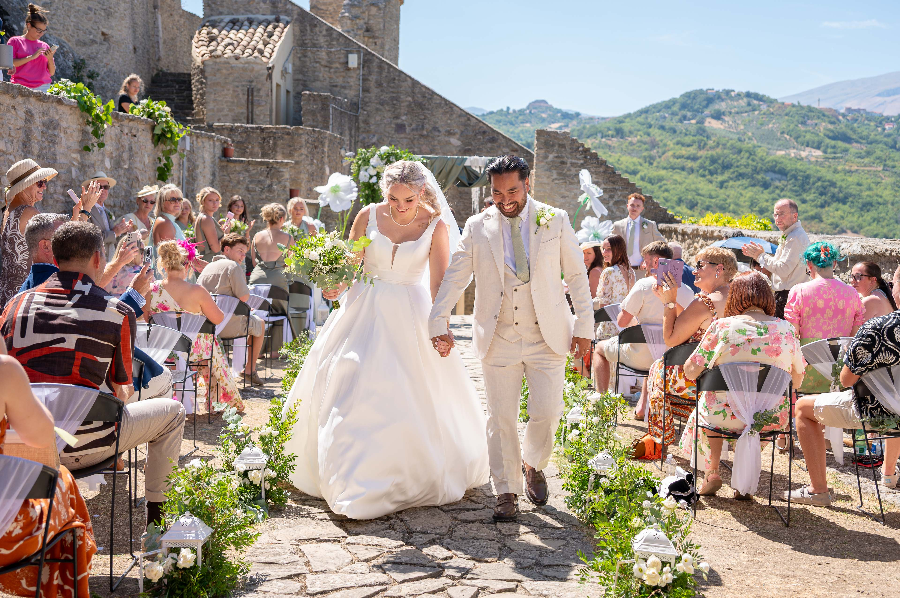

PEAK × Lake Garda Marathon
Due capitoli fotografici realizzati per Oiko Service: una produzione pubblicitaria con atleti e modelli e la copertura della Lake Garda Marathon.
Apri il case study ↗Progetti fotografici e audiovisivi tra persone, sport, cerimonie e luoghi. Ogni storia prende forma con uno sguardo attento al contesto e ai dettagli.
Due capitoli fotografici realizzati per Oiko Service: una produzione pubblicitaria con atleti e modelli e la copertura della Lake Garda Marathon.
Apri il case study ↗
Fotografia e video per raccontare i momenti e le persone che rendono unica la giornata.
Parliamo del vostro matrimonio ↗
Un racconto fatto di azione, attesa e piccoli momenti che definiscono la partita.
Richiedi un servizio sportivo ↗
Immagini spontanee dei momenti condivisi, degli incontri e dei dettagli della festa.
Raccontami il tuo evento ↗
Ritratti e momenti della giornata per celebrare il percorso e chi vi ha accompagnato.
Parliamo della tua laurea ↗
Un racconto discreto della cerimonia e dei momenti vissuti insieme.
Richiedi informazioni ↗
Contenuti fotografici per presentare persone, attività, prodotti e progetti con coerenza.
Parliamo del tuo progetto ↗
Una selezione di immagini dedicate ai paesaggi e alle architetture del territorio.